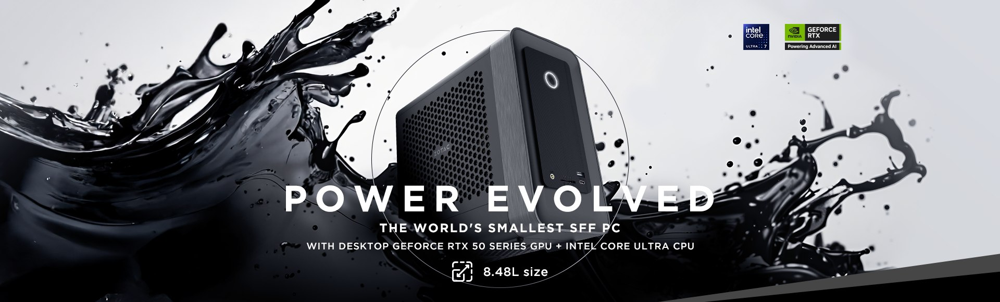
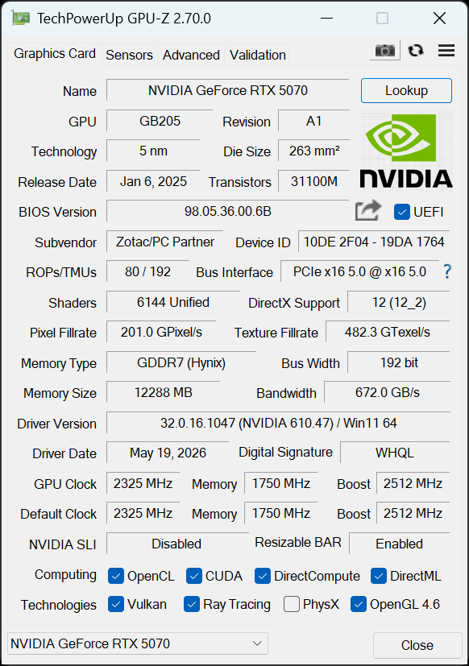
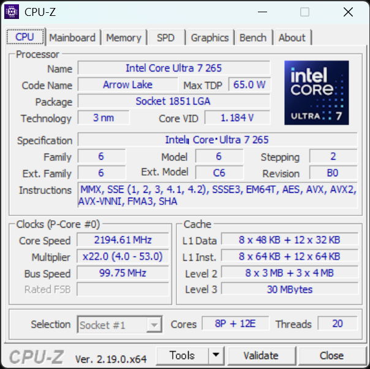
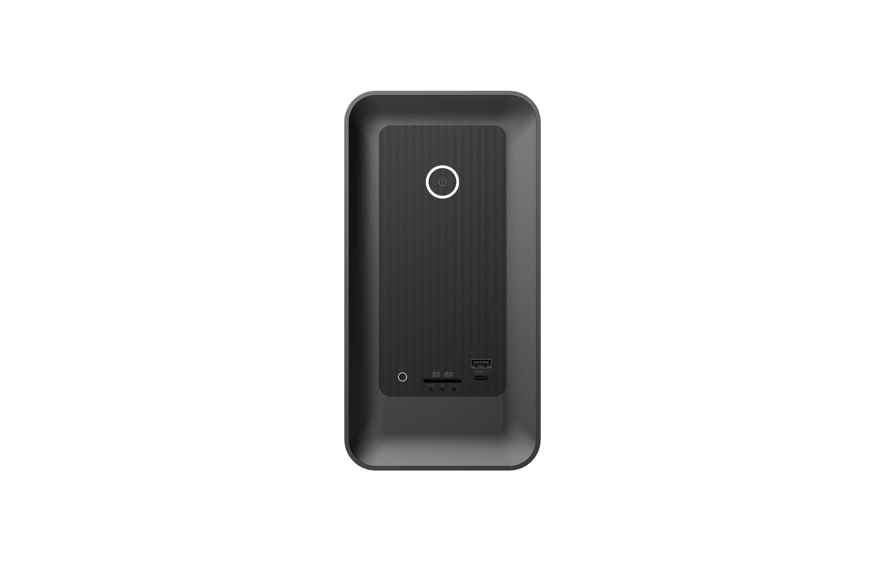
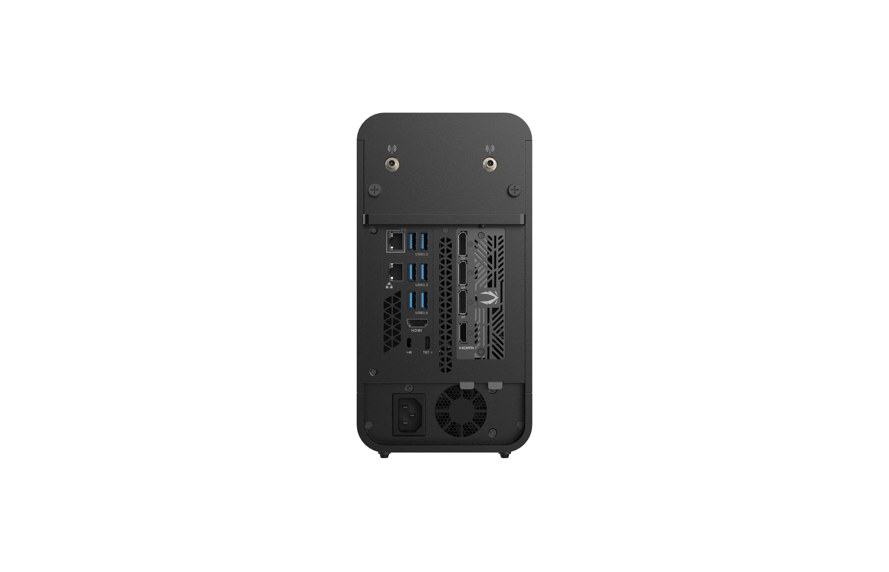
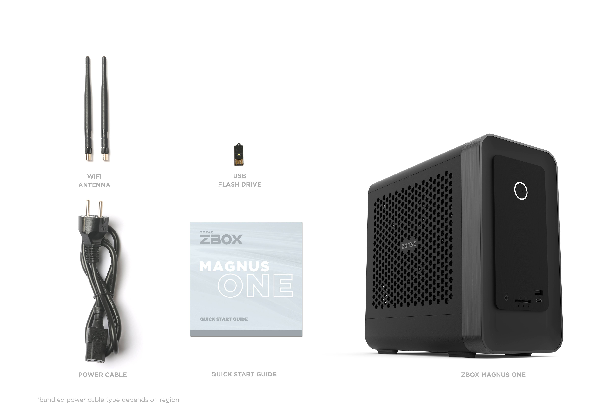

ZBOX MAGNUS ONE EU275070Cデスクトップ Core Ultra 7 × RTX 5070、フルデスクトップ構成
GeForce RTX 5070 12GB と、デスクトップ版 Core Ultra 7 265（20コア）を小型筐体に収めたミニPC「ZBOX MAGNUS ONE EU275070C」。 3DMarkによるグラフィックス性能、GPUレンダリング、AI画像生成、CPU性能、写真編集まで、社内計測のベンチマークから 同じ MAGNUS ONE の AMD版 5070（同一GPU・CPU違い）との立ち位置、RTX 5060 Ti との性能・VRAM のトレードオフ、そして 複数回計測でのばらつき（安定性）を、用途選定の参考となるよう中立に読み解きます。

実測サマリー（3行）
- 3DMark と Blender で RTX 5060 Ti を約38〜46%（Cinebench GPU は約22%）引き離し、比較した MAGNUS 系では RTX 5080・5070 Ti に次ぐ位置（Speed Way 5,827 / Steel Nomad 5,283 / Time Spy Extreme 10,562、Blender 6,010＝同じ RTX 5070 同士ではトップ）。複数回計測でのばらつきは 3DMark・GPUレンダリングとも cv 1%未満。
- 同じ RTX 5070 の AMD版（ER98N5070C）とGPUはほぼ互角。差は CPU に出て、Core Ultra 7 265 は Cinebench CPU 5,760 pts・cv 0.17%（AMD版 Ryzen 9 9850HX は 5,286・cv 8.09%）。約+9%かつ桁違いに安定。
- AI＝ComfyUI SDXL 9.05 秒/枚（5060 Ti より約25%高速）。ただし VRAM は 12GB で、容量重視なら 16GB の 5060 Ti が候補。テスト構成: メモリ32GB・電源プラン＝高パフォーマンス。
小型筐体に「デスクトップGPU＋デスクトップCPU」を収めた MAGNUS ONE
ZBOX MAGNUS ONE EU275070C は、ZOTAC のミニPC「ZBOX MAGNUS ONE」シリーズのうち、GeForce RTX 5070 12GB（Blackwell 世代 / DLSS 4）と Intel Core Ultra 7 265（20コア）を組み合わせたモデルです。 MAGNUS ONE は、デスクトップ級のGPUを小型筐体に収めたシリーズです。本機（EU275070C）は PCIe 5.0 x16 のデスクトップGPUカード（RTX 5070）に ソケット式のデスクトップCPU（Core Ultra 7 265 / Socket 1851 LGA）を組み合わせた、Intel デスクトップ構成です。 同じ MAGNUS ONE でも、AMD版（ER98N5070C）はモバイルの Ryzen 9 9850HX を採用しており、GPU はどちらも同じデスクトップ RTX 5070・CPU だけがデスクトップ（本機）かモバイル（AMD版）かという違いになります。
本機はベアボーン構成で、メモリ・ストレージは導入側で選定できます（本レビューのテスト機は 32GB DDR5-5600 ＋ 1TB NVMe SSD）。 CPU はソケット式、GPU は PCIe カードというデスクトップと同じ実装ですが、ユーザーによる CPU・GPU の交換は公式にはサポート・保証の対象外です。導入後に手を入れられるのはメモリ・ストレージで、構成の可変部分はここになります。 筐体は 8.48L（270.5 × 126 × 249 mm）で、500W 80+ Platinum 電源を内蔵（外部ACアダプター不要）。デスクトップ版 GeForce RTX 5070 を搭載するミニPCとしては世界最小クラスの高性能機で、一般的なミニPC（NUC型など）より一回り大きいものの、単体（デスクトップ）GPUを積めるミニPCの最上位クラスにあたります。
GPUGeForce RTX 5070 とは
NVIDIA の Blackwell 世代（RTX 50 シリーズ）のデスクトップ向けGPU。本機の搭載モデルは VRAM 12GB（GDDR7 / 192-bit）。前世代から、より高速な GDDR7 メモリ、フレーム生成を強化した DLSS 4、新世代のレイトレ／AI（Tensor）ユニットへ更新された世代です。
ポイントゲームに加えてローカルでのAI画像生成・推論の需要が広がり、描画性能だけでなく VRAM容量（扱えるモデル規模・解像度）が重視されるようになっています。RTX 5070 は、ゲーム・GPUレンダ・ローカルAIを1台でこなせるミドルハイ帯のGPUです。
CPUCore Ultra 7 265 とは
Intel の Core Ultra シリーズ2（Arrow Lake）世代のデスクトップ向けCPU。高性能Pコア8＋高効率Eコア12 の 20コア / 20スレッド、最大約5.3GHz、ソケット式 LGA1851。前世代までの Hyper-Threading を採用せず、物理コア重視へ切り替わった世代です。
ポイント機能ブロックを分けた「タイル（チップレット）」構成と、AI処理用ユニット（NPU）を備える「AI PC」世代。電力効率を重視しつつ、デスクトップ向けはソケット式で、自作PCなどでは単体での交換・保守がしやすいのが一般的な特徴です。
実機のハードウェア確認（GPU-Z / CPU-Z）
テスト機の構成を GPU-Z・CPU-Z のメイン画面で確認します。GPU は ZOTAC GAMING GeForce RTX 5070（12GB GDDR7 / 192-bit / GB205 / Blackwell）、CPU は Core Ultra 7 265（20スレッド / Arrow Lake / Socket 1851 LGA）。 GPU-Z 読みで Boost 2,512MHz・PCIe 5.0 x16・Resizable BAR 有効、CPU-Z 読みで 8P＋12E（20スレッド）・最大 5.3GHz（53倍）と、いずれもカタログ仕様どおりの個体です。


テスト環境・比較機材・計測方法
テスト構成（実機計測）
| 製品 / SKU | ZOTAC ZBOX MAGNUS ONE EU275070C（MAGNUS ONE / Windows） |
|---|---|
| GPU | ZOTAC GAMING GeForce RTX 5070 12GB（GDDR7・192bit / Blackwell / GB205） |
| GPUドライバー | NVIDIA GeForce 610.47（WHQL）／ Boost 2,512MHz・PCIe x16 5.0 は GPU-Z（§01）参照 |
| CPU | Intel Core Ultra 7 265（20C / 20T・Arrow Lake / Socket 1851 LGA） |
| メモリ（テスト構成） | 32GB DDR5-5600（16GB×2） |
| ストレージ | Crucial P3 1TB NVMe（CT1000P3PSSD8）ほか |
| OS | Windows 11 Home 25H2（Build 26200） |
| 電源プラン | 高パフォーマンス |
| 計測日 | 2026-06-25 |
製品仕様（カタログ / EU275070C）
| グラフィックス | ZOTAC GAMING GeForce RTX 5070 12GB GDDR7 / 192-bit / Blackwell / DLSS 4（PCIe 5.0 x16） |
|---|---|
| プロセッサー | Intel Core Ultra 7 265（デスクトップ） 20コア / 20スレッド / 2.4–5.3GHz / Arrow Lake / Socket 1851 LGA |
| メモリー | 2 × DDR5-6400 CSODIMM / 5600 SO-DIMM（最大96GB） |
| ストレージ | 1 × M.2 NVMe PCIe 5.0 ×4 ＋ 1 × M.2 NVMe PCIe 4.0 ×4 ＋ 1 × 2.5インチ SATA III |
| 映像出力 | 3 × DisplayPort 2.1b（UHBR20）＋ 1 × HDMI（GPU側4系統）／ iGPU側を併用して最大4画面クローン・6画面拡張 |
| ネットワーク | 5GbE ＋ Gigabit Ethernet（Dual LAN）／ Wi-Fi 7（802.11be）/ Bluetooth 5.4 |
| 前面 I/O | UHS-II 3-in-1 カードリーダー ／ 2 × USB 3.0（1 × Type-C） |
| 背面 I/O | 1 × Thunderbolt 4 ／ 4 × USB 3.2 Gen2 ＋ 2 × USB 3.0 ／ デュアル Wi-Fi アンテナ |
| 電源 | 500W 80+ Platinum PSU 内蔵 |
| 外形・容積 | 270.5 × 126 × 249 mm（8.48L）／ ツールレスアクセス |
| 対応OS | Windows 11 |
製品カタログで全仕様を見る（ZBOX MAGNUS ONE EU275070C）→ZOTAC 直販ストア →
比較機材（すべて ZBOX MAGNUS 系）
公平性のため、比較は同じ ZBOX MAGNUS 系の実機に限定しています。上位の参考として RTX 5080（EU275080C）・RTX 5070 Ti（EU27507TC） を併載し、同じ RTX 5070 が Intel版（本機）と AMD版の2台、RTX 4070 も Desktop（ERP74070C）と Laptop（EN374070C）の2台あるため、表記は GPU＋CPUで区別します。各機は出荷時の代表構成で計測しました。
| 本記事の表記 | モデル | SKU | CPU |
|---|---|---|---|
| RTX 5080 | MAGNUS ONE ULTRA | EU275080C | Core Ultra 7 265 |
| RTX 5070 Ti | MAGNUS ONE | EU27507TC | Core Ultra 7 265 |
| RTX 5070（本機 / Intel） | MAGNUS ONE | EU275070C | Core Ultra 7 265 |
| RTX 5070（AMD） | MAGNUS ONE | ER98N5070C | Ryzen 9 9850HX |
| RTX 5060 Ti | MAGNUS EN | EN275060TC | Core Ultra 7 255HX |
| RTX 4070 Desktop | MAGNUS ONE（前世代） | ERP74070C | Core i7-13700 |
| RTX 4070 Laptop | MAGNUS EN（前世代） | EN374070C | Core i7-13700HX |
MAGNUS ラインナップでの位置づけ
3DMark（グラフィックス性能）— 5060 Ti を約4割上回り、RTX 5070 として上位
DX12 Ultimate／レイトレを含む 3DMark の3テストでは、本機 RTX 5070 は同じ MAGNUS 系の RTX 5060 Ti を Speed Way +41%・Steel Nomad +46%・Time Spy Extreme +38% と明確に上回りました。 比較した MAGNUS 系のなかでは RTX 5080・5070 Ti に次ぐ位置で、RTX 5070 として順当な実力です。 同じ RTX 5070 の AMD版（ER98N5070C）とはほぼ同等（いずれも数%以内）で、GPUが同一であることがそのまま表れています。 複数回計測での変動はいずれも cv 1%未満と安定しています。
GPUレンダリング — Blender は RTX 5070 同士でトップ
GPU レンダリングでも上位クラスのスコアを記録しました。Cinebench 2026 GPU は 74,746 pts で RTX 5060 Ti（61,312）を約22%上回り、AMD版 5070（73,744）とはほぼ同水準。 Blender Benchmark（OptiX）は 6,010 と、同じ RTX 5070 のなかで最高値でした（AMD版 5070 の 5,899 が僅差で続き、上位には 5070 Ti の 7,666 と RTX 5080 の 9,329 があります）。 Cinebench GPU・Blender いずれも同じ RTX 5070 の AMD版と数%以内の差で、RTX 5080・5070 Ti に次ぐ位置です。
なぜ本機は「デスクトップ部品」構成なのか
本機の要点は、ノート向けではなく デスクトップ版の RTX 5070 と Core Ultra 7 265 をそのまま使う点です。 GPU は PCIe 5.0 x16 のフルレーン、CPU は Socket 1851 のソケット実装で、いずれも電力上限・拡張性の面でデスクトップの利点を引き継ぎます。 3DMark（グラフィックス性能）・GPUレンダリングで RTX 5060 Ti（モバイルCPU構成の MAGNUS EN）を大きく上回る背景には、GPUクラスの差に加えてこのプラットフォーム差があります。
ローカル画像生成AI（Stable Diffusion）— 速度は上位級、VRAMは12GB
画像生成AI「Stable Diffusion（SDXL）」を ComfyUI で実測すると、本機 RTX 5070 は 1024×1024 / 30ステップで 9.05 秒/枚（6.63 枚/分）、 Hires.Fix（1024→1536）で 28.29 秒/枚を記録。RTX 5060 Ti（12.08 / 38.52 秒/枚）より約25%高速で、AMD版 5070（9.09 / 28.76）とはほぼ同等です。
注意したいのは VRAM 容量です。本機の RTX 5070 は 12GB（192-bit GDDR7）で、生成速度では 5060 Ti を上回りますが、容量では 16GB の 5060 Ti を下回ります。 モデルのロードや、本レビュー未検証の高解像度・大バッチで VRAM 容量がボトルネックになる用途では、速度の速い本機より 16GB の 5060 Ti が有利になる場面があります。速度重視なら 5070、容量重視なら 16GB の 5060 Ti、という分かりやすいトレードオフです。
CPU性能と安定性 — Core Ultra 7 265 は高く、そして非常に安定
Core Ultra 7 265（20C/20T・デスクトップ Arrow Lake）は Cinebench 2026 CPU で 5,760 pts。 前世代EN機（EN374070C）の Core i7-13700HX（3,645）を約58%上回り、RTX 5060 Ti の Core Ultra 7 255HX（5,618）も上回りました（同じ Core Ultra 7 265 を積む 5080 版 5,980・5070 Ti 版 5,825 に次ぐ3位）。
特筆すべきは安定性です。本機の複数回計測でのばらつきは cv 0.17%。同じ RTX 5070 の AMD版（Ryzen 9 9850HX）は性能こそ 5,286 pts と健闘しますが、複数回計測でのばらつきは cv 8.09% と大きく振れます。 同じデスクトップ RTX 5070・同じ筐体でも、CPUプラットフォームの違い（本機＝デスクトップ Core Ultra 7 265 ／ AMD版＝モバイル Ryzen 9 9850HX）が「速度（約+9%）」と「再現性（cv 0.17% 対 8.09%）」の両方に表れた形で、B2Bで重視される計測の安定性では本機（Intel構成）が明確に優位でした。
※ Cinebench CPU の複数回計測でのばらつき（cv：変動係数 = 標準偏差÷平均×100%）: 本機 Core Ultra 7 265 = 0.17% ／ Core Ultra 7 255HX = 2.58% ／ Ryzen 9 9850HX = 8.09% ／ Core i7-13700HX = 5.48%。値はいずれも3回計測の中央値。
全コアを長時間使う CPU レンダリングの傾向も、Blender Benchmark を CPU モードで実測して確認しました。本機 Core Ultra 7 265 は 合算 381（3回計測の中央値・cv 0.3%）。同じ Core Ultra 7 265 を積む 5070 Ti 版（384）とほぼ並び、RTX 5060 Ti の Core Ultra 7 255HX（372）を上回りました。デスクトップ Core i7-13700（252）には約51%の差をつけ、Cinebench と同じ上位の序列を CPU レンダでも示しています。
※ Blender CPU の複数回計測でのばらつき（cv）: 本機 Core Ultra 7 265 = 0.3% ／ Core Ultra 7 265（5070 Ti）= 0.6% ／ Core Ultra 7 255HX = 0.6% ／ Core i7-13700 = 4.1%。値はいずれも3回計測の中央値。AMD版 5070（Ryzen 9 9850HX）・4070 Laptop（i7-13700HX）は Blender CPU を追加計測中で、整い次第この比較に追記します。
写真編集・オフィス（Procyon）
UL Procyon の写真編集（Photoshop＋Lightroom Classic）で 9,195、 オフィス（Essentials）で 4,884（5080 の 4,994・5070 Ti の 4,907 に次ぐ3位）。Essentials は AMD版 5070（4,766）や 5060 Ti（4,430）を上回りました。 一方 Photo は AMD版 5070（9,882）が本機を約7%上回ります。Photo は GPU 単体ではなく CPU／メモリ／iGPU を含む複合ワークロードで、構成差が出やすい指標です。
複数回計測でのばらつき（再現性・安定性）
本プロジェクトが重視する 安定性指標。複数回計測を実施したテストの変動係数（cv：標準偏差÷平均×100%）を一覧します。 本機は 3DMark（グラフィックス性能）・GPUレンダリング・CPU・オフィスのいずれも cv 1.3%以内に収まり、特に Cinebench CPU は cv 0.17%と、比較した中でも際立って安定しています。小型筐体ながら計測の再現性が高く、B2B 運用での予測可能性に優れます。
| テスト | 中央値 | min–max | cv% | 計測回 |
|---|---|---|---|---|
| Time Spy Extreme | 10,562 | 10,535–10,573 | 0.19 | 3 |
| Speed Way | 5,827 | 5,827–5,856 | 0.29 | 3 |
| Steel Nomad | 5,283 | 5,230–5,318 | 0.84 | 3 |
| Cinebench GPU | 74,746 | 74,678–74,851 | 0.12 | 3 |
| Blender (OptiX) | 6,010 | 6,005–6,035 | 0.27 | 3 |
| Cinebench CPU | 5,760 | 5,752–5,771 | 0.17 | 3 |
| Procyon Essentials | 4,884 | 4,785–4,897 | 1.26 | 3 |
※ ComfyUI と Procyon Photo は1回計測のため cv は非算出。その他は3回計測の中央値。
安定性を支える冷却構造
小型筐体ながら複数回計測でのばらつきが小さい背景には、デスクトップ部品を収めるための十分な冷却設計があります。 連続負荷でもクロックを維持しやすく、実測の cv 1%前後（3DMark（グラフィックス性能）・GPUレンダリング・CPU）という再現性の高さに表れています。
負荷段階別の実測 — 待機・ゲーム相当・最大負荷
ベンチマーク実行中の GPU を nvidia-smi で1秒間隔で連続記録し、負荷段階ごとに GPU 温度・コアクロック・消費電力・VRAM を集計しました。小型筐体でも温度とクロックが乱れないかを、実センサー値で確認します。
| 状態 | GPU温度 中央/ピーク | コアクロック | 消費電力 中央/ピーク | ファン | VRAM |
|---|---|---|---|---|---|
| 待機（アイドル） | 約54°C | アイドル | 約16W | 0% | 0.8GB |
| ゲーム相当（3DMark グラフィックス負荷） | 79 / 82°C | 約2,752 MHz | 250 / 253W | 〜87% | 6GB |
| 最大負荷（AI連続生成 ComfyUI） | 81 / 84°C | 2,767 MHz | 250 / 255W | 91% | 11.5GB |
注目は高負荷でもコアクロックが約 2,767 MHz を維持している点です。AI 連続生成で GPU 温度が 84°C に達してもクロックはほぼ低下せず、消費電力は GPU の電力上限である約 250W でほぼ一定。つまり本機は熱ではなく電力リミットで頭打ち＝サーマルスロットリングは見られません。8.48L の小型筐体でも、デスクトップ RTX 5070 を温度で絞らず回せています。最大負荷ではファンが 90% 前後まで上がります（本レビューでは騒音（dB）は計測していません）。その分クロックを維持しています。AI 連続生成では VRAM が 11.5GB（12GB 中）まで使われ、12GB は SDXL の標準〜高解像度生成を十分こなせる水準です。
CPUレンダ中のCPU温度 — Blender CPU（全コア持続負荷）
GPU に続き、CPU 側も全コアを持続的に使う Blender CPU レンダの区間で温度・電力・クロックを実測しました。レンダ中はコア負荷が 100% を維持し、パッケージ温度は中央値 72°C、ピークでも 86°C にとどまります。消費電力は、持続枠（PL1・約 65W）に対し各シーン開始のターボで瞬間最大 120W まで跳ねる鋸歯状で、ターボを含む実測平均は 74W です（平均とピークの開きが大きい瞬発型で、UPS 等の給電設計では瞬間 120W 級を見込むと安全）。全コアレンダ時のクロックは約 3.4GHz（ターボ時は一時 4.7GHz）です。クロックの上下は発熱ではなく持続電力の枠（PL1・約 65W）による頭打ちで、温度は Tjmax（約 100°C）まで余裕があり、サーマルスロットリングは見られませんでした。ログ上、谷でクロックが 5GHz 台を示すのはシーン切替のアイドル時に単コアがブーストしたもので、全コア動作ではありません。温度は本個体の実測値で、機体差・室温・グリス状態で変動します（機種間の温度比較は行いません）。
| 負荷 | CPUパッケージ温度 中央/ピーク | 全コアレンダ時クロック | CPU消費電力 負荷中の平均 / 最大 | コア負荷 |
|---|---|---|---|---|
| Blender CPU（全コア持続） | 72 / 86°C | 約3,373 MHz | 74 / 120W | 100% |
プラットフォームと拡張性 — デスクトップ部品の強み
MAGNUS ONE の設計上の強みは、小型でありながら デスクトップ部品をそのまま使う点にあります。 本機ではGPUが PCIe 5.0 x16 のフルレーン接続、CPUが Socket 1851 のソケット実装であることを実機ツールで確認しました。 導入後に増設・交換できるのはメモリとストレージで、CPU・GPU のユーザー交換は公式にはサポート・保証の対象外のため、性能面の構成は導入時に決める前提で選定してください。
本機の I/O は据置ワークステーション並みに充実しています。前面は UHS-II 3-in-1 カードリーダーと USB 3.0（Type-A / Type-C）、背面は Thunderbolt 4・USB 3.2 Gen2 ×4・USB 3.0 ×2、映像は DisplayPort 2.1b（UHBR20）×3 ＋ HDMI（GPU側4系統。iGPU側の出力を併用して最大4画面クローン / 6画面拡張）、ネットワークは 5GbE ＋ Gigabit の Dual LAN と Wi-Fi 7。電源は 500W 80+ Platinum を内蔵し、外部ACアダプターは不要です。


② 500W 80+ Platinum 電源を内蔵 — 外部ACアダプター不要で取り回しが良い。
③ Thunderbolt 4 ＋ Dual LAN（5GbE+1GbE）＋ Wi-Fi 7 と ④ 4画面出力（DP 2.1b×3＋HDMI）を 8.48L に収める。

想定される用途
ここまでの実測を踏まえ、本機に適した代表的な用途を、計測結果と結びつけて整理します（中立・実測の範囲での想定です）。
安定運用が要るローカルGPUワークロード
3DMark（グラフィックス性能）・GPUレンダリング・CPU が cv 1%前後と再現性が高く、メモリ・ストレージを導入側で増設しやすいため、 可視化・GPUレンダリング・シミュレーション補完など、結果の一貫性が問われる業務に向きます。Cinebench GPU 74,746 / Blender 6,010 と、ローカルでのGPU処理を十分にこなせます。
ローカル画像生成AI（SDXL）（オンプレ）
画像生成AI（Stable Diffusion）が ComfyUI SDXL 9.05 秒/枚と上位級の生成速度で、ネットワークに依存しないオンプレAIをこのサイズで構築できます。 VRAM は 12GB のため、扱うモデル規模・解像度・バッチが VRAM 容量に収まる範囲では本機が速く、容量がボトルネックになる大規模用途では 16GB の 5060 Ti も併せて検討すると選定が安定します。
クリエイティブ制作・可視化端末の補完
Procyon Photo 9,195 / Essentials 4,884 と、写真編集・オフィス系も高水準（Essentials は 5080・5070 Ti に次ぐ3位、Photo は AMD版に次ぐ2位）。 省スペースでローカルGPUレンダリングや映像・写真編集をこなしつつ、設置スペースの限られた制作現場や可視化端末にも導入しやすい構成です。
まとめ — どんな現場に向くか
ZBOX MAGNUS ONE EU275070C は、デスクトップ部品ベースの小型機で「RTX 5070 級のGPU＋安定した20コアCPU」を再現性高く回したい現場に向く一台です。 3DMark（グラフィックス性能）・GPUレンダリングで RTX 5060 Ti を約4割上回り、Blender では RTX 5070 同士でトップ。同じ RTX 5070 の AMD版とGPUはほぼ同等ながら、CPUの速度と安定性（cv 0.17%）で上回りました。 AI で VRAM 容量を最優先するなら 16GB の RTX 5060 Ti が候補になりますが、 「性能・安定性・拡張性のバランス」で選ぶなら、本機は MAGNUS ONE の中核として導入しやすい構成です。
適所マップ
向く
- RTX 5070 級のGPUを安定運用したい SIer 業務機
- 計測・処理の再現性が要る可視化／GPUレンダリング
- オンプレのローカル画像生成AI（SDXL）（速度重視）
- メモリ・ストレージを導入側で選定・増設したい設置
他候補が向く
- AI で VRAM 容量最優先 → 16GB の RTX 5060 Ti（MAGNUS EN）
- AMD 標準環境・マルチスレッド重視 → AMD版 RTX 5070（ER98N5070C）
付録: 全ベンチマーク結果
本記事チャートの元数値を一覧にまとめます（すべて 中央値。計測条件は §02、各機の識別も §02 の比較表を参照）。比較はすべて ZBOX MAGNUS 系。
| テスト | RTX 5080EU275080CCore Ultra 7 265 | RTX 5070 TiEU27507TCCore Ultra 7 265 | RTX 5070（本機）EU275070CCore Ultra 7 265 | RTX 5070（AMD）ER98N5070CRyzen 9 9850HX | RTX 5060 TiEN275060TCCore Ultra 7 255HX | RTX 4070 DesktopERP74070CCore i7-13700 | RTX 4070 LaptopEN374070CCore i7-13700HX |
|---|---|---|---|---|---|---|---|
| Time Spy Extremescore・高いほど良い | 14,859 | 12,501 | 10,562 | 10,365 | 7,674 | 7,833 | 5,527 |
| 3DMark Speed Wayscore・高いほど良い | 8,989 | 7,474 | 5,827 | 5,769 | 4,119 | 4,498 | 2,951 |
| 3DMark Steel Nomadscore・高いほど良い | 8,588 | 6,634 | 5,283 | 5,251 | 3,620 | 3,999 | 2,662 |
| Cinebench 2026 GPUpts・高いほど良い | 109,086 | 94,543 | 74,746 | 73,744 | 61,312 | 68,598 | 45,669 |
| Blender Benchmark (OptiX)score・高いほど良い | 9,329 | 7,666 | 6,010 | 5,899 | 4,327 | 5,320 | 3,608 |
| Cinebench 2026 CPUpts・高いほど良い | 5,980 | 5,825 | 5,760 | 5,286 | 5,618 | 4,024 | 3,645 |
| Blender Benchmark (CPU)score・高いほど良い | 394 | 384 | 381 | 未計測 | 372 | 252 | 未計測 |
| ComfyUI SDXL (1024)秒/枚・短いほど良い | 6.04 | 7.07 | 9.05 | 9.09 | 12.08 | 10.08 | 15.15 |
| ComfyUI SDXL Hires秒/枚・短いほど良い | 18.10 | 21.97 | 28.29 | 28.76 | 38.52 | 31.32 | 47.89 |
| Procyon Photo Editingscore・高いほど良い | 9,088 | 8,922 | 9,195 | 9,882 | 8,678 | 8,771 | 6,404 |
| Procyon Office (Essentials)score・高いほど良い | 4,994 | 4,907 | 4,884 | 4,766 | 4,430 | 4,685 | 3,728 |
凡例: 値は3回計測（ComfyUI / Procyon Photo は1回）の中央値。FAIL=実行したが無効。ComfyUI のみ「秒/枚（短いほど良い）」。